Camera Sensors#
카메라는 Camera USD prim 유형을 사용하여 모델링됩니다. 카메라 데이터는 렌더 제품을 사용하여 카메라 prim에서 획득되며, omni.replicator extension을 포함한 Omniverse의 여러 extension이 렌더 제품을 생성할 수 있습니다.
참고
Isaac Sim 카메라 기능은 Omniverse cameras를 기반으로 합니다.
버전 6.0부터 deprecated: isaacsim.sensors.camera extension은 deprecated되었습니다. 대신 isaacsim.sensors.experimental.rtx를 사용하세요. 새 extension은 균일한 작성/런타임 분리와 함께 RtxCamera, CameraSensor, TiledCameraSensor, SingleViewDepthCameraSensor, StructuredLightCamera를 제공합니다. Camera Sensors를 참조하세요.
Overview#
Isaac Sim 카메라는 RTX 렌더러로 렌더링되는 USD Camera prim입니다. isaacsim.sensors.experimental.rtx extension은 이 prim을 두 개의 쌍으로 이루어진 클래스로 감쌉니다:
작성 —
RtxCamera는 USDCameraprim을 생성하거나 감싸고,OmniSensorAPI스키마를 적용하며,.camera속성을 통해 광학 파라미터 (초점 거리, 조리개, 클리핑 범위)를 노출합니다.런타임 —
CameraSensor는RtxCamera객체를 감싸고, 지정된 해상도에서 Replicator 렌더 제품을 생성하고, annotator (rgb,distance_to_camera,semantic_segmentation등)를 연결하고, 렌더링된 프레임을 numpy/warp 배열로 검색하기 위한get_data()를 제공합니다.
두 개의 전문 카메라 변형이 이 기반을 확장합니다 — 입체적 깊이 시뮬레이션을 위한 SingleViewDepthCameraSensor와 투영 패턴 깊이 복원을 위한 StructuredLightCamera. 아래 Specialized Camera Types를 참조하세요.
How to Create a Camera#
Isaac Sim은 GUI Create 메뉴를 통해 또는 RtxCamera 클래스를 통해 프로그래밍 방식으로 카메라 prim을 생성하는 것을 지원합니다.
Create with the RtxCamera Class#
RtxCamera 작성 클래스는 OmniSensorAPI 스키마가 적용된 Camera prim을 생성하거나 감싸고, 복수형 배열 생성자 파라미터 (positions, translations, orientations, scales)를 통해 변환을 설정하고, .camera 속성을 통해 광학 파라미터를 노출합니다. 독립 실행형 예제 standalone_examples/api/isaacsim.sensors.experimental.rtx/create_camera_basic.py는 전체 생성 및 읽기 워크플로를 시연합니다:
./python.sh standalone_examples/api/isaacsim.sensors.experimental.rtx/create_camera_basic.py
예제는 창고 환경을 로드하고, /World/camera에 RtxCamera를 생성하고, CameraSensor를 통해 rgb와 distance_to_image_plane annotator를 연결하고, 매 100 틱마다 렌더링된 RGB 프레임을 저장합니다. 틱 100의 프레임은 다음과 같습니다:
{kind=link}
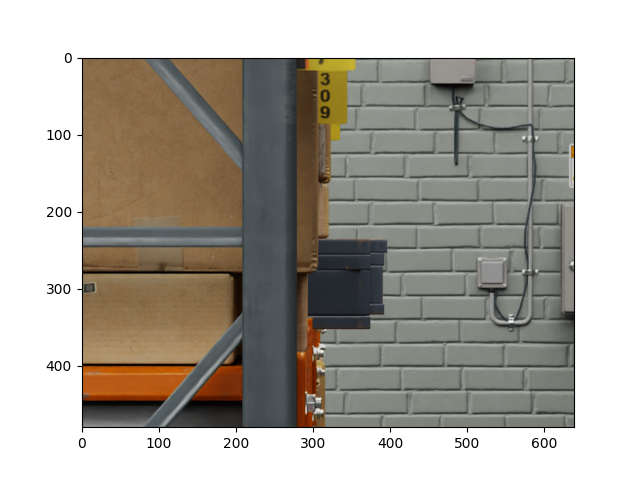
create_camera_basic.py에서 저장한 RGB 프레임 (틱 100, 480x640).#
Tick Rate#
RtxCamera의 tick_rate 파라미터 (Hz)는 카메라가 렌더링하는 빈도를 제어합니다. 0 (기본값)은 카메라가 모든 시뮬레이션 프레임마다 렌더링하는 자동 트리거 모드를 활성화합니다. 0이 아닌 값을 설정하면 카메라가 시뮬레이션 스텝 속도와 무관하게 지정된 빈도로 렌더링합니다. 이는 omni:sensor:tickRate prim 속성에 매핑되며 RtxCamera가 자동으로 처리합니다.
from isaacsim.sensors.experimental.rtx import RtxCamera
# Render the Camera at 30 Hz independently of the simulation frame rate.
camera = RtxCamera(path="/World/Camera", tick_rate=30.0)
tick_rate는 ROS2 Camera Helper, ROS2 Camera Info Helper, UCX Camera Helper 노드의 deprecated된 frameSkipCount 입력에 대한 권장 대체제입니다. 전체 마이그레이션 가이드와 관련 알려진 문제 목록은 Multi-Tick Rendering을 참조하세요.
How to Collect Data from a Camera#
카메라에서 데이터를 수집하는 권장 방법은 RtxCamera 작성 객체를 감싸고 렌더 제품의 Replicator annotator를 관리하는 CameraSensor 런타임 클래스를 사용하는 것입니다. 배치 다중 카메라 워크플로의 경우 TiledCameraSensor를 사용합니다. 입체적 깊이 시뮬레이션의 경우 SingleViewDepthCameraSensor를 사용합니다 (전체 서브 페이지는 Specialized Camera Types 참조).
Annotators#
CameraSensor는 구성 시간에 annotator 이름 목록을 받아들이고 get_data("annotator-name")를 통해 최신 데이터를 노출하며 이는 (warp.array, info_dict) 튜플을 반환합니다. 엔드투엔드로 rgb 및 distance_to_image_plane 수집을 보려면 기본 예제를 실행합니다:
./python.sh standalone_examples/api/isaacsim.sensors.experimental.rtx/create_camera_basic.py
CPU 및 CUDA 상주 annotator 버퍼 간에 선택하려면 독립 실행형 예제 standalone_examples/api/isaacsim.sensors.experimental.rtx/camera_annotator_devices.py를 참조하세요.
Tiled / Batched Cameras#
TiledCameraSensor는 여러 카메라를 단일 타일식 렌더 제품으로 패킹하며, 이는 강화 학습 및 다중 환경 워크플로에서 카메라당 하나의 렌더 제품보다 훨씬 효율적입니다.
./python.sh standalone_examples/api/isaacsim.sensors.experimental.rtx/camera_tiled.py
Single-View Depth Cameras#
SingleViewDepthCameraSensor는 입체적 깊이 시뮬레이션 후처리 (시차, 기준선, 노이즈, 이상값 제거)로 CameraSensor를 확장합니다. 전체 파이프라인 설명은 Single-View Post-Processing Pipeline 서브 페이지를 참조하세요.
./python.sh standalone_examples/api/isaacsim.sensors.experimental.rtx/camera_stereoscopic_depth.py
Specialized Camera Types#
두 개의 전문 카메라 센서가 깊이 및 구조화된 광 워크플로를 위해 RtxCamera와 CameraSensor를 기반으로 합니다:
Advanced Topics#
Calibration and Camera Lens Distortion Models#
Omniverse 카메라는 다양한 렌즈 왜곡 모델을 지원합니다. isaacsim.sensors.experimental.rtx의 RtxCamera 클래스는 schemas 파라미터를 통해 렌즈 왜곡 스키마 (예: OmniLensDistortionOpenCvFisheyeAPI, OmniLensDistortionOpenCvPinholeAPI)를 적용하고 attributes 파라미터를 통해 왜곡 계수를 설정하는 것을 지원합니다.
OpenCV와 같은 보정 툴킷은 일반적으로 내재 행렬과 왜곡 계수로 보정 파라미터를 제공합니다. Omniverse는 OpenCV 핀홀 및 OpenCV 피시아이 렌즈 왜곡 모델을 기본적으로 지원합니다. Isaac Sim은 OpenCV 렌즈 왜곡 모델과 함께 RtxCamera 사용을 시연하는 두 가지 독립 실행형 예제를 제공합니다.
참고
이전에는
Camera클래스에fisheyePolynomial왜곡 모델의 계수를 설정하여 OpenCV 핀홀 및 피시아이 모델 왜곡 파라미터를 근사화하는 API가 포함되어 있었습니다. OpenCV 렌즈 왜곡 모델이 기본적으로 지원되므로 이러한 API는 deprecated되었습니다.Omniverse RTX Camera Projection Attributes는 Isaac Sim 5.0부터
OmniLensDistortion스키마를 위해 deprecated되었습니다. deprecated된 속성은 Camera prim을 선택할 때 UI의Fisheye Lens패널에 여전히 표시되지만OmniLensDistortion스키마를 설정한 경우 무시됩니다.
경고
Isaac Sim 6.0에서 Camera prim에 OmniLensDistortionLutAPI 스키마를 적용하여 일반화된 투영 모델을 사용하는 임의의 왜곡 모델을 활성화하는 것이 올바르게 작동하지 않으며, 설정된 경우 렌더러가 기본 핀홀 모델로 폴백합니다. 대신 임의의 왜곡 모델을 지정하려면 위에 참조된 deprecated된 Omniverse RTX Camera Projection Attributes를 사용하세요. 이는 향후 릴리스에서 수정될 것입니다.
OpenCV Fisheye#
OmniLensDistortionOpenCvFisheyeAPI 스키마가 적용된 RtxCamera를 생성하기 위해 독립 실행형 예제를 실행합니다:
./python.sh standalone_examples/api/isaacsim.sensors.experimental.rtx/camera_opencv_fisheye.py
예제를 실행하고 뷰포트를 새로 생성된 카메라로 설정한 후 아래와 같은 이미지가 표시되는지 확인합니다.
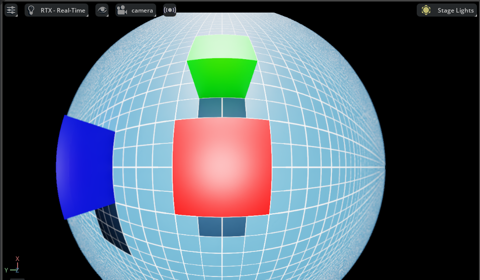
OpenCV Pinhole#
OmniLensDistortionOpenCvPinholeAPI 스키마가 적용된 RtxCamera를 생성하기 위해 독립 실행형 예제를 실행합니다:
./python.sh standalone_examples/api/isaacsim.sensors.experimental.rtx/camera_opencv_pinhole.py
예제를 실행하고 뷰포트를 새로 생성된 카메라로 설정한 후 아래와 같은 이미지가 표시되어야 합니다.
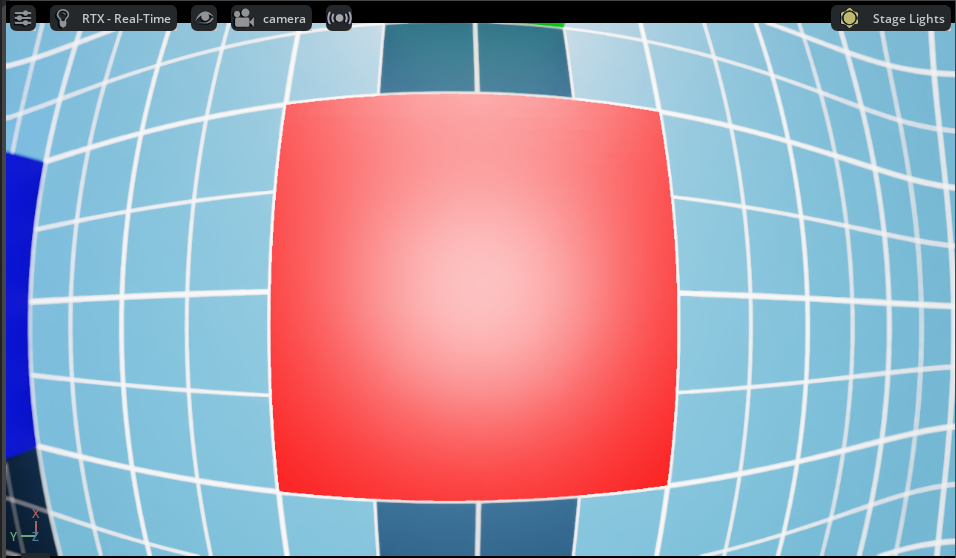
Extrinsic Calibration#
외재 보정 파라미터는 일반적으로 보정 툴킷에서 변환 행렬의 형태로 제공됩니다. 축과 회전 순서 사이의 규칙이 중요하며 툴킷마다 다릅니다.
개별 카메라 센서의 외재 파라미터를 설정하려면 다음 예제를 사용하여 보정 툴킷의 변환 행렬을 Isaac Sim 단위로 변환합니다:
# Pseudocode -- adapt axis remapping and quaternion reordering to your calibration toolkit.
import numpy as np
from isaacsim.sensors.experimental.rtx import RtxCamera
dX, dY, dZ = _, _, _ # Extrinsics translation vector from the calibration toolkit
rW, rX, rY, rZ = _, _, _, _ # Note the order of the rotation parameters, it depends on the toolkit
RtxCamera(
"/rig/camera_color",
positions=np.array([-dZ, dX, dY]), # Translation in the local frame of the prim
orientations=np.array([rW, -rZ, rX, rY]), # Quaternion orientation (wxyz) in the world/local frame
# (depends if translations or positions is specified)
)
대안으로 카메라 센서를 prim에 부착할 수 있습니다. 이 경우 카메라 센서는 prim에서 위치와 방향을 상속합니다.
from isaacsim.sensors.experimental.rtx import RtxCamera
# Create a camera prim with the OmniSensorAPI schema
cam = RtxCamera(
"/World/camera",
# translations = ...
# orientations = ...
)
Exposing the ISP Camera Pipeline#
omni.sensors.nv.camera extension은 카메라 센서와 이미지 신호 처리기 (ISP) 파이프라인을 시뮬레이션합니다. Isaac Sim에는 OmniSensorGenericCameraCoreAPI USD 스키마를 통해 ISP 파이프라인을 구성하고 모든 파이프라인 단계의 내성 출력을 볼 수 있는 이미지로 저장하는 독립 실행형 예제가 포함되어 있습니다.
ISP 파이프라인의 개별 단계 및 스키마 속성에 대한 자세한 내용은 extension 문서를 참조하세요.
참고
omni.sensors.nv.camera와 함께 번들된 샘플 ISP 프로그램은 Linux x86_64에서만 사용 가능합니다. 다른 플랫폼에서 예제를 실행하면 정보 메시지가 출력되고 조기에 종료됩니다. 다른 플랫폼을 위한 자체 ISP 프로그램이 있으면 스크립트의 _isp_program_path 변수를 업데이트하여 가리키고 플랫폼 검사를 주석 처리합니다.
예제 실행:
./python.sh standalone_examples/api/isaacsim.sensors.experimental.rtx/camera_isp_pipeline.py
예제는 20 프레임을 렌더링하고 camera_isp_pipeline_outputs 디렉터리에 각 ISP 단계의 출력을 저장합니다. 파이프라인 단계는 순서대로 아래에 설명되어 있습니다.
HDR 텍스처 읽기 — 센서 처리 전에 렌더러에서 읽은 원시 HDR 방사 버퍼.
{kind=link}
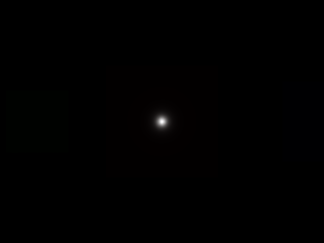
색상 보정 — 블랙 레벨 감산, 화이트 밸런스 이득, 3x3 색상 보정 행렬, 센서 응답 스케일링을 적용합니다.

CFA 인코딩 — 구성된 Color Filter Array 패턴 (이 예제에서 GRBG)을 사용하여 RGB 이미지를 단일 채널 Bayer 모자이크로 인코딩합니다.
{kind=link}
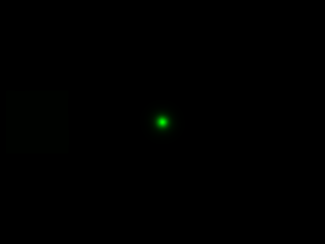
노이즈 시뮬레이션 — 실제 센서 동작을 근사화하기 위해 Bayer 이미지에 가우시안 및 샷 노이즈를 추가합니다.
{kind=link}
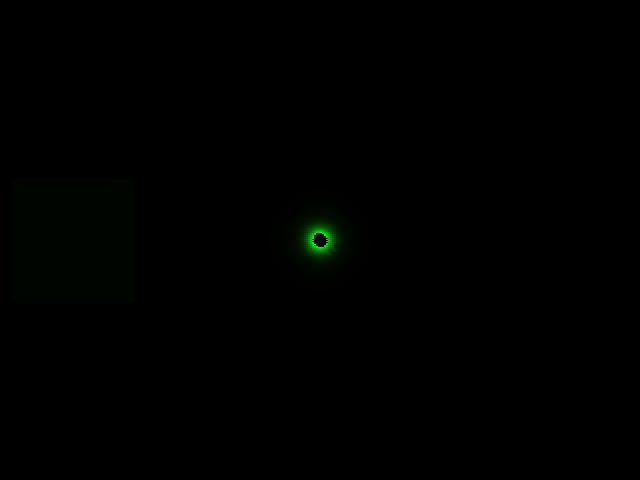
압축 — Bayer 데이터의 고동적 범위를 낮은 비트 깊이로 압축하는 구간별 선형 톤 커브를 적용합니다.
{kind=link}
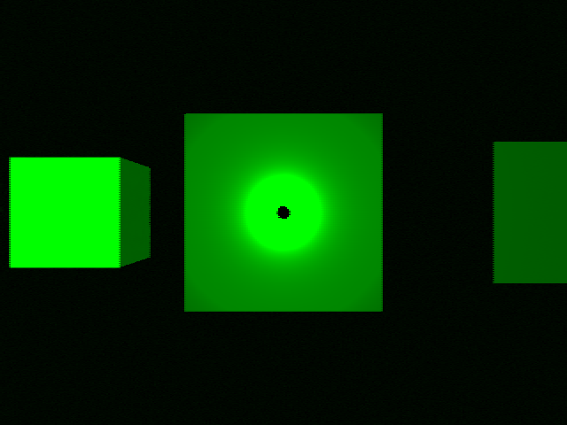
ISP 출력 — 온칩 ISP 프로그램 (디모자이크, 노이즈 제거, 톤 매핑, 색상 그레이딩)이 실행된 후 완전히 처리된 이미지.
{kind=link}
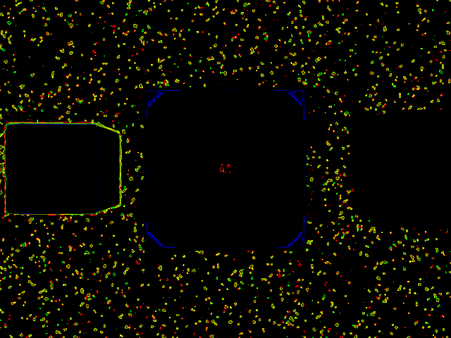
YUV 변환 — RGB에서 YUV 색상 공간으로 변환된 최종 ISP 출력.
{kind=link}
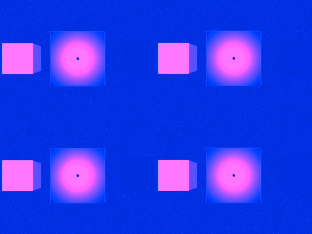
Camera Sensor Rigs#
카메라 센서 리그는 단일 prim에 부착된 카메라 센서 모음입니다. 수동으로 생성하거나 보정 파라미터에서 파생된 개별 센서로 조립할 수 있습니다.
이것은 RealSense™ 깊이 카메라 D455의 디지털 트윈을 어떻게 생성했는지에 대한 간략한 설명입니다. 카메라의 USD는 콘텐츠 폴더에서 찾을 수 있습니다: /Isaac/Sensors/RealSense/D455/rsd455.usd.
RealSense에는 세 개의 시각 센서와 하나의 IMU 센서가 있습니다. 카메라 원점에 대한 배치는 TechSpec 문서의 레이아웃 다이어그램에서 가져왔습니다.
대부분의 카메라 파라미터는 TechSpec에서도 찾을 수 있었습니다. 예를 들어 USD 파라미터 fStop은 TechSpec의 F 번호의 분모이며; focalLength는 초점 거리이고 ftheatMaxFov는 대각선 시야각입니다. 그러나 focusDistance와 같은 일부 파라미터는 실제 출력을 비교하고 정보에 입각한 추측을 통해 추정되었습니다.
해당 예제의 horizontalAperture와 verticalAperture는 기술 사양에서 파생되었습니다. TechSpec에서 왼쪽, 오른쪽 및 색상 센서는 OmniVision Technologies OV9782로 나열되며, 해당 센서의 이미지 영역은 3896 x 2453 µm입니다.
깊이 및 색상 카메라의 해상도는 1280 x 800이지만 해당 크기의 렌더 제품을 출력에 부착하는 것은 사용자에게 달려 있습니다.
Pseudo Depth 카메라는 카메라 펌웨어에 의해 생성된 깊이 이미지의 대체물입니다. 스테레오에서 이미지를 생성하는 알고리즘을 복사하려고 시도하지는 않지만, Camera_Pseudo_Depth 컴포넌트는 왼쪽과 오른쪽 스테레오 카메라 사이의 카메라 위치에서 보이는 씬 깊이를 반환할 수 있는 편의 카메라입니다. 스테레오에서 깊이 이미지를 생성하는 것이 더 정확하며, RealSense에서 사용된 것과 동일한 알고리즘을 사용하면 동일한 결과 (아티팩트 포함)가 생성됩니다.
Camera Inspector Extension#
Camera Inspector Extension을 사용하면 다음을 할 수 있습니다:
각 카메라에 대한 여러 뷰포트 생성
카메라 커버리지 확인
원하는 프레임에서 카메라 포즈를 가져오고 설정하기
Launching Extension#
Camera Inspector extension을 열려면:
Menu Bar로 이동합니다.
Tools > Sensors > Camera Inspector를 선택합니다.
extension을 실행한 후 드롭다운에서 카메라를 볼 수 있는지 확인합니다.
새 카메라를 추가할 때 extension이 이 새 카메라를 찾을 수 있도록 Refresh 버튼을 클릭해야 합니다.
검사할 카메라를 선택합니다.
Camera State Textbox#
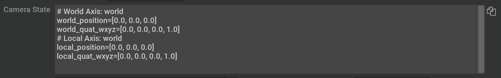
extension 상단 근처의 Camera State 텍스트 박스는 카메라의 위치와 방향을 코드로 직접 복사하는 편리한 방법을 제공합니다. 텍스트 박스 오른쪽의 복사 아이콘을 클릭하여 클립보드에 복사합니다.
Creating a Viewport#
카메라가 선택된 상태에서 카메라에 대한 새 뷰포트를 생성할 수 있습니다.
카메라 드롭다운 메뉴 오른쪽에 있는 Create Viewport 버튼을 클릭합니다.
기본적으로 새 뷰포트를 생성하고 현재 선택된 카메라를 할당합니다.
extension의 두 드롭다운 메뉴와 버튼을 사용하여 다양한 카메라를 다양한 뷰포트에 할당합니다:
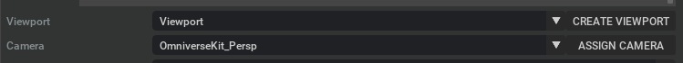
뷰포트를 실행한 후 왼쪽 상단 메뉴를 사용하여 Viewport로 이동하여 해상도를 변경할 수 있습니다.
참고
해상도를 변경할 때 Omniverse Kit은 정사각형 픽셀만 지원합니다. 이는 해상도 종횡비가 조리개 비율과 같아야 함을 의미합니다.
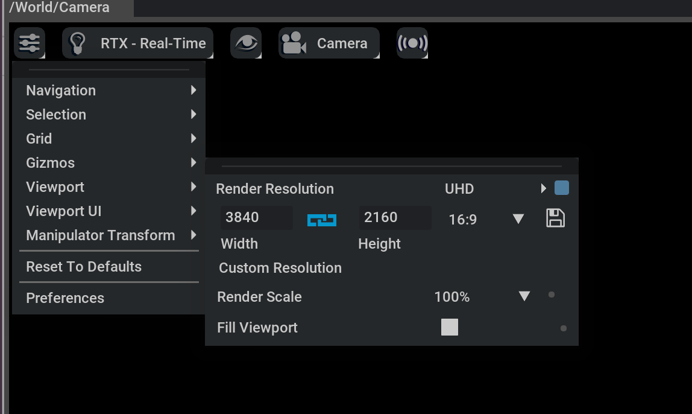
{kind=link}
Standalone Examples#
카메라 센서 생성 및 데이터 수집에 대한 엔드투엔드 예제는 다음을 참조하세요.
기본 생성 및 시각화
# Basic camera creation with rgb + distance_to_image_plane annotators in a warehouse scene
./python.sh standalone_examples/api/isaacsim.sensors.experimental.rtx/create_camera_basic.py
전문 카메라
# Single-view stereoscopic depth sensor
./python.sh standalone_examples/api/isaacsim.sensors.experimental.rtx/create_camera_depth_sensor.py
./python.sh standalone_examples/api/isaacsim.sensors.experimental.rtx/camera_stereoscopic_depth.py
# Structured light camera
./python.sh standalone_examples/api/isaacsim.sensors.experimental.rtx/camera_structured_light.py
배치 / 타일식
# TiledCameraSensor for multi-camera batched rendering
./python.sh standalone_examples/api/isaacsim.sensors.experimental.rtx/camera_tiled.py
보정
# OpenCV pinhole and fisheye lens distortion models on RtxCamera
./python.sh standalone_examples/api/isaacsim.sensors.experimental.rtx/camera_opencv_pinhole.py
./python.sh standalone_examples/api/isaacsim.sensors.experimental.rtx/camera_opencv_fisheye.py
Annotator 장치 선택
# CPU vs CUDA-resident annotator buffers
./python.sh standalone_examples/api/isaacsim.sensors.experimental.rtx/camera_annotator_devices.py
ISP 파이프라인
# Per-stage ISP pipeline introspection (Linux x86_64 only)
./python.sh standalone_examples/api/isaacsim.sensors.experimental.rtx/camera_isp_pipeline.py
ROS 2 통합
# Publish camera frames over ROS 2
./python.sh standalone_examples/api/isaacsim.sensors.experimental.rtx/camera_ros.py